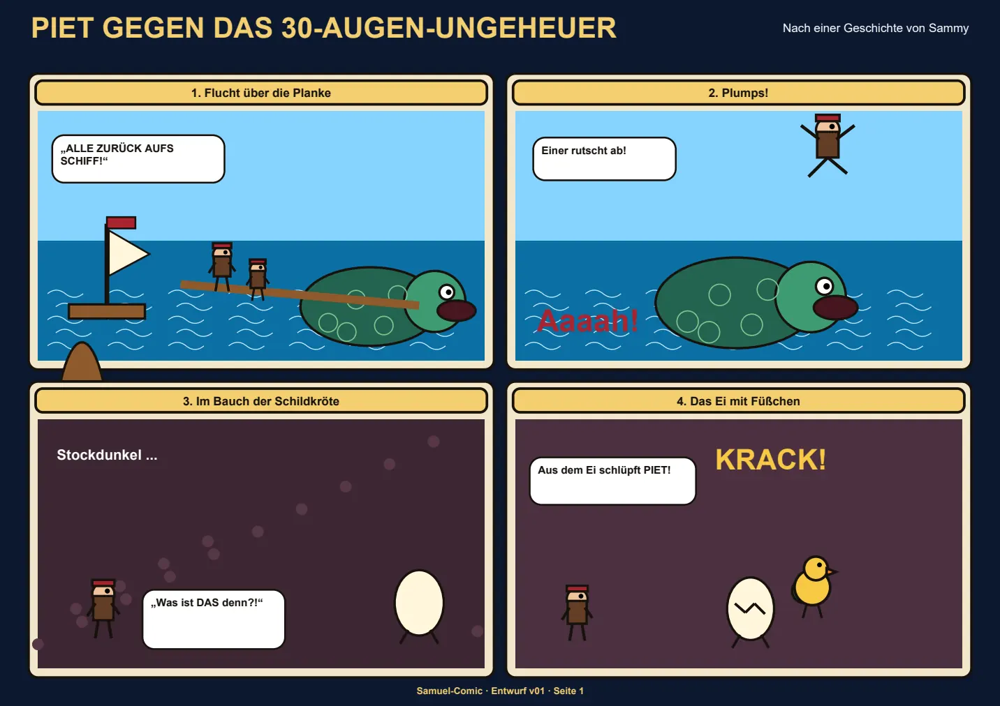
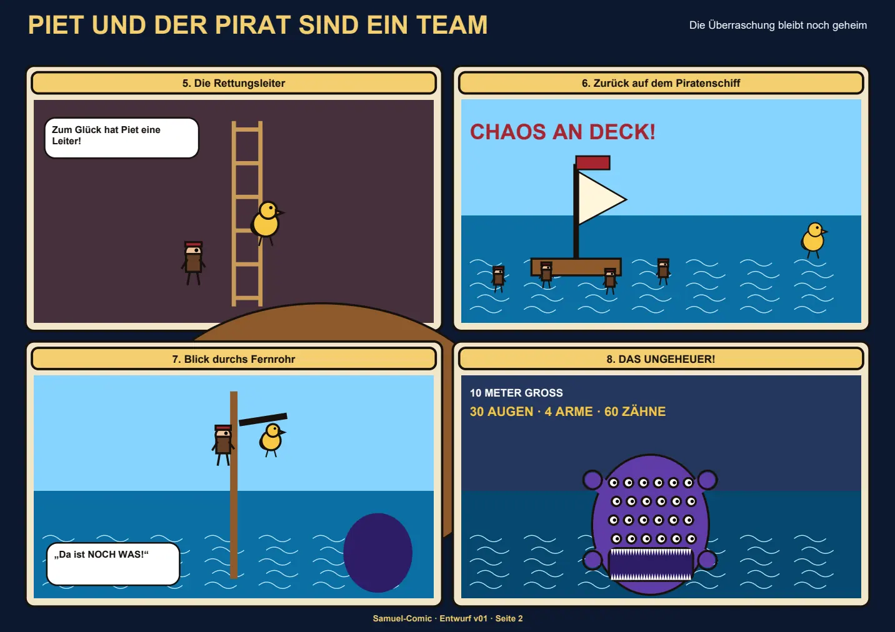
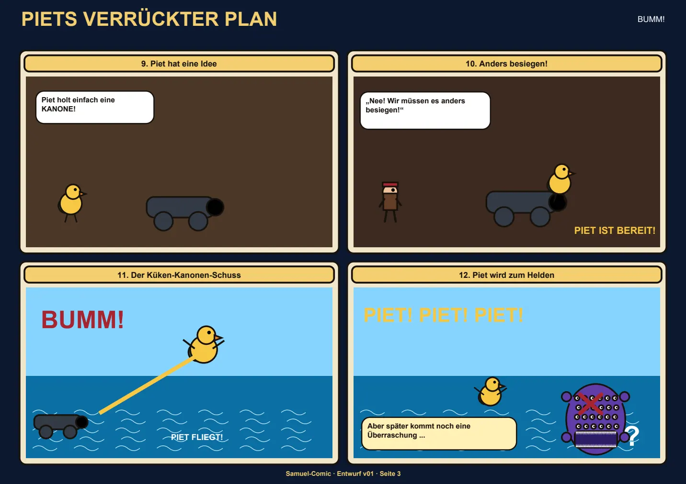

Sams frühe Comic-Entwürfe
Piet gegen das 30-Augen-Ungeheuer
Wie Piet den Piraten trifft und es mit einem Ungeheuer mit 30 Augen aufnimmt. Eine frühe Idee für Piets Vorgeschichte.
Die Zeichnungen und Sprechblasen sind im deutschen Original zu sehen. Tippe auf eine Seite, um das Bild in voller Größe zu öffnen.


